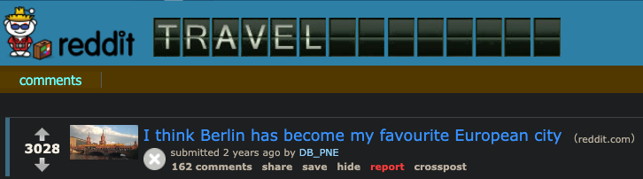

Testimonios de Visitantes
Las siguientes opiniones sobre Berlín fueron realizadas por diferentes usuarios en el subreddit r/travel alojado en el sitio web de
Reddit.

Usuario fantomas_de_la_vie:
"Berlín es una ciudad cool y relajada para quienes disfrutan de algunos
aspectos culturales mixtos. Viejo vs. nuevo. Tradicional vs. moderno. Este vs. Oeste. Pasado y presente. Me gusta esa ciudad".Usuario TiMouton:
"Berlín es esta hermosa mezcla de historia, cultura, gente, arte, arquitectura, etc. Nunca me cansaré de visitarla."Usuario Limpy_lip:
"Para mí Berlín es una de las capitales Europeas más infravaloradas. Ninguna otra me ha hecho sentir tanto la historia reciente que ahí.
Ver los hoyos de bala en los edificios de los museos. Ver los edificios destruidos que han sido reconstruidos. La división entre Este y Oeste. Increíble."
Por Mauricio D. Rascón
mauriciodaiki@outlook.com
Referencias:
Regresar a la Portada